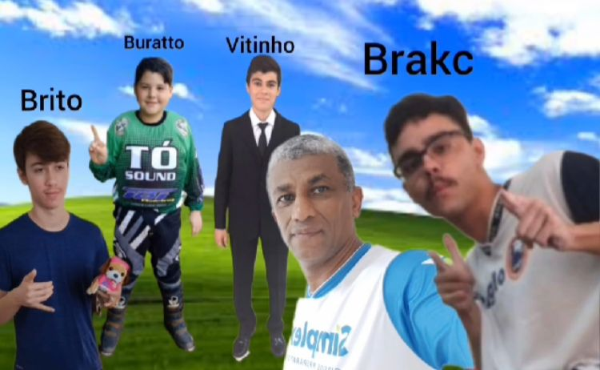

JUST CRIAS - Uma Amizade Incomparável
A amizade é um dos pilares mais importantes da vida. Ela nos proporciona apoio, diversão e companheirismo, e quando encontramos um grupo de amigos especial, a jornada se torna ainda mais significativa. É nesse contexto que surge o grupo JUST CRIAS, composto por quatro amigos inseparáveis: Elebrakc, Buratto, Vitinho e Cabrito. Cada um desses amigos possui características únicas que contribuem para a dinâmica e a harmonia do grupo. Neste texto, exploraremos detalhadamente a personalidade e os talentos de cada integrante.